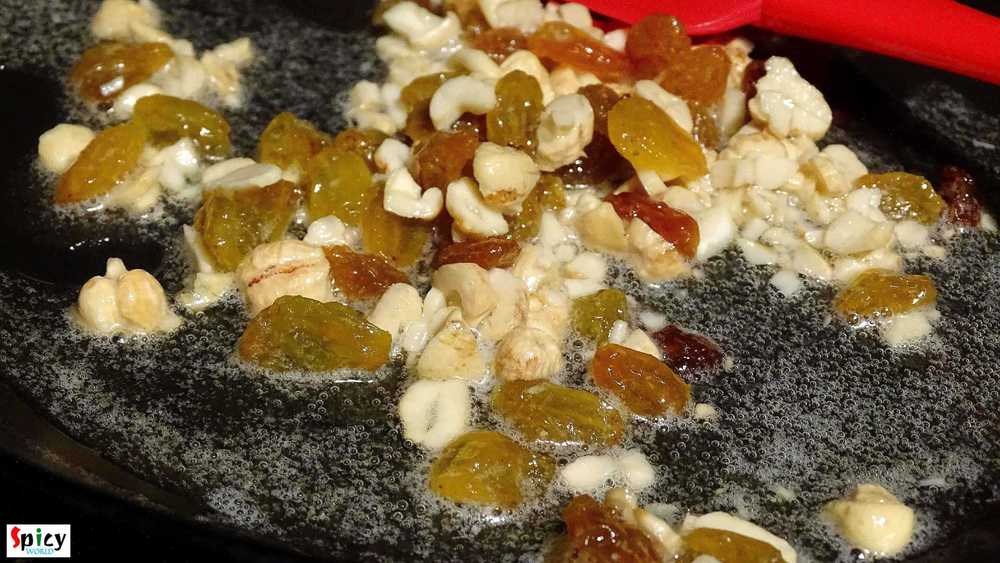
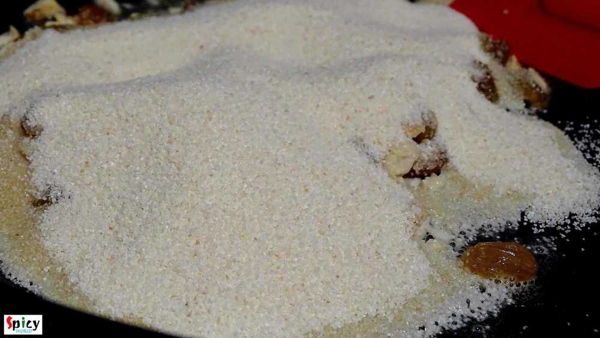
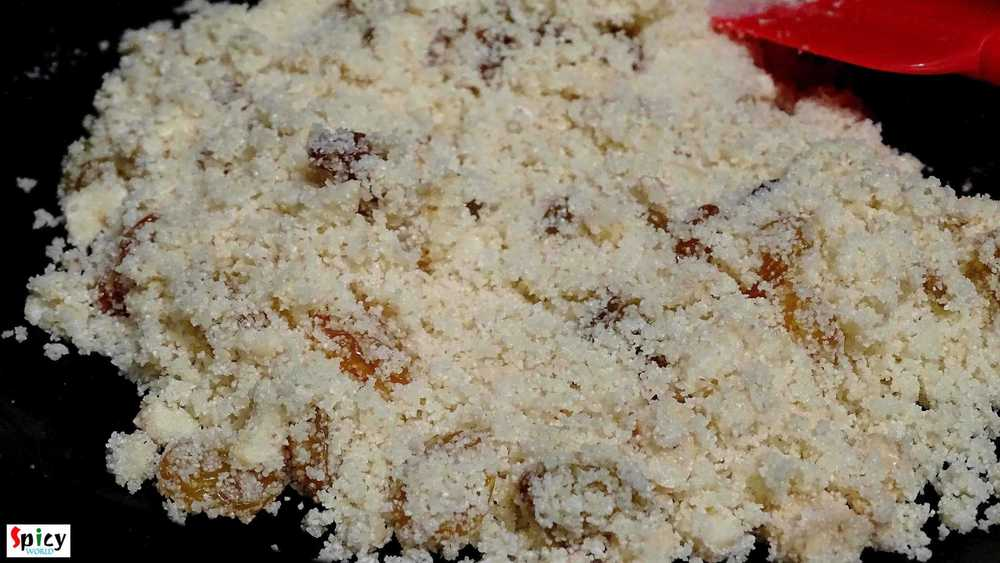
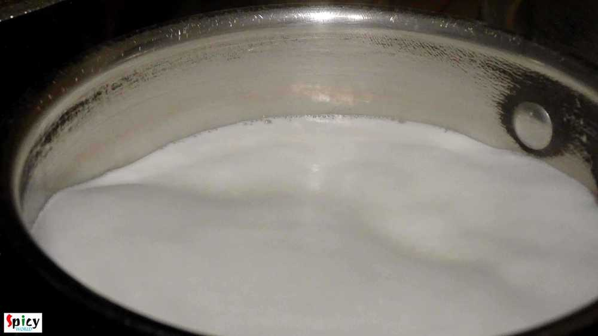
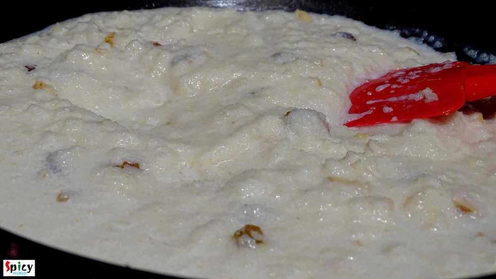
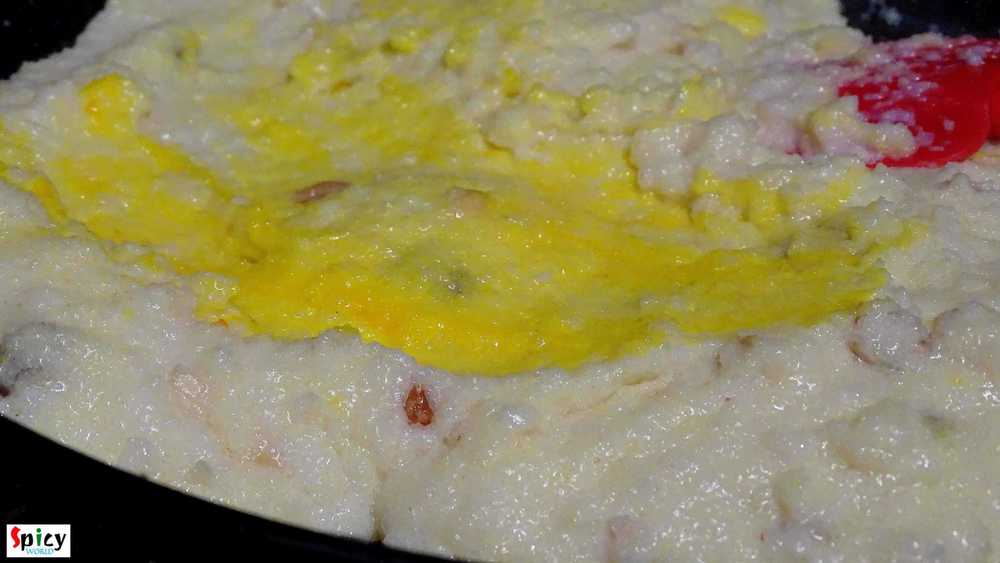
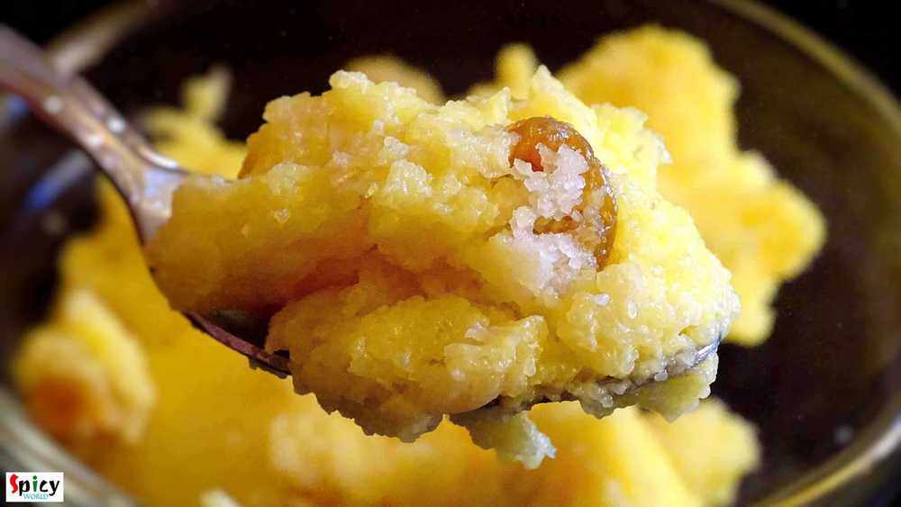

Simple and Easy Recipes
Sooji Halwa / Rava Kesari / Semolina Pudding
© 2016 Spicy World, Published on: Dec 21, 2015
The day before yesterday I was craving for some dessert at afternoon. As I didn't have any in my kitchen, had to make it by own. The quickest recipe I found is this one 'Sooji Halwa'. It really takes 20-25 minutes to prepare and tastes awesome. You can make 'halwa' in many colors like white, golden, yellow or orange. But I like my halwa little yellow in color. This was the first time I made halwa at home, really enjoyed while making and obviously eating it!! I love 'rose' flavor in my halwa, you can add cardamom, cinnamon or nutmeg flavors also. Try this in your kitchen and let me know how it turns out.

Ingredients
- Little more than half cup of semolina (sooji).
- 4 to 5 Tablespoons of ghee / unsalted butter.
- 2 Teaspoons of chopped cashews.
- Some raisins.
- 6 to 7 Tablespoons of sugar.
- 1 and half cup of milk.
- Yellow food color / Kesar / Saffron strands.
- Few drops of rose water.

Steps
Add ghee / butter in a hot pan and melt it.

Then add chopped cashews. You can add whole cashews also.
Saute it for 2 minutes.

Then add the raisins. You can add almond / pistachio also.
Mix it for 1 minute.
Then add semolina / sooji in hot ghee.
Mix it and stir it continuously for 10 minutes in slow flame.
Boil the milk in another burner while roasting the sooji.
Now add the boiled hot milk to the roasted semolina. Mix it well for 5 minutes.
Add sugar, color / kesar and rose water in the sooji. Mix it well for another 5 minutes.
Turn off the gas and let it rest for 4 minutes.
Then serve.
Your sooji halwa is ready ...
Serve this warm after some spicy meal ...
")